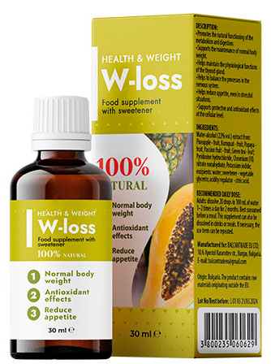
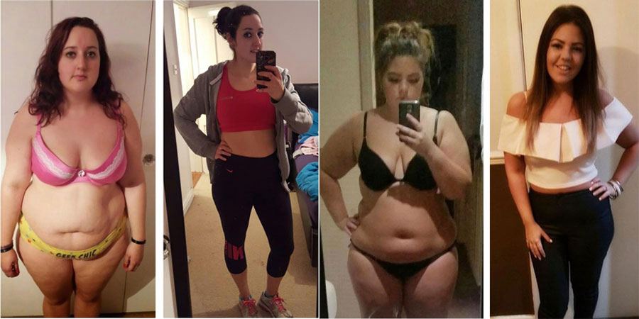

Un moyen simple de perdre du poids est une percée dans la diététique moderne?
Dernière mise à jour: 12.05.2021Les statistiques officielles sur l'obésité dans le monde comptent environ 1,9 milliard de personnes en surpoids. Et ce chiffre ne cesse de croître. La principale raison du recrutement rapide – les gens ne savent pas comment perdre du poids correctement et maintenir le poids normal. Pour perdre du poids, beaucoup adhèrent à deux règles: des séances d'entraînement épuisantes régulières et le comptage des calories. Ce rythme ne résiste pas à tout le monde, à cause de quoi il y a des perturbations. Le corps est stressé, ce qui conduit à un gain de poids encore plus important.
La nutritionniste Сlaire Sagnier a brisé tous les stéréotypes dans le domaine de la perte de poids et a révélé un moyen simple et efficace de perdre du poids.

– Bonjour! Dites-nous pourquoi tant de gens ont été obèses ces derniers temps?
– Bonjour. Le premier facteur est la nutrition. Il est important de ce que vous mangez et en quelle quantité. Malheureusement, il est difficile de s'en tenir à une bonne nutrition à notre époque. Les rayons des magasins sont remplis de fast-food, bonbons, sodas et autres aliments nocifs, qui est difficile à résister.
Il existe également des facteurs mineurs qui affectent l'obésité: l'hérédité, le mode de vie et l'écologie. Mais maintenant, il est plus important pour nous de savoir pourquoi nous ne pouvons pas perdre du poids, pas pourquoi nous gagnons.
– Oui, vraiment, pourquoi est-il si difficile de perdre du poids?
– Au cours de mes 12 années de pratique, j'ai vu assez d'exemples d'obésité chez les personnes de moins de 30 ans. Tout est dans le travail du métabolisme. Il ralentit, la graisse est déposée beaucoup plus rapidement, et les régimes stricts ne font que provoquer son accumulation active.
– Mais ici, s'il vous plaît, plus en détail. Vous voulez dire que les régimes n'aident pas à perdre du poids?
– Pas exactement comme ça. Une alimentation correcte et modérée, bien sûr, n'a fait de mal à personne. Mais les régimes stricts, qui étaient si populaires il y a 5-10 ans, n'apportent aucun avantage. Je vais vous expliquer comment cela fonctionne.
Assis sur un régime strict, le corps ne reçoit pas suffisamment de substances dont il a besoin. Le cerveau perçoit cela comme une menace et commence à faire des réserves de graisse pour un “jour de pluie” avec vengeance .
Ainsi, voulant se débarrasser de l'excès de poids, au contraire, nous l'accumulons activement. Par conséquent, il est très important de construire le régime correctement. En mangeant abondamment, mais de manière incorrecte, le corps ne reçoit pas non plus les substances nécessaires et continue à accumuler les graisses plutôt que de les traduire en énergie.
– Est-il possible de perdre du poids en faisant du sport sans changer le régime alimentaire?
– L'activité physique est très importante. Mais le sport ne représente que 20 à 30% de perte de poids. Vous ne perdez pas tant de poids que vous renforcez votre corset musculaire si les séances d'entraînement sont correctement ajustées. La principale perte de poids réside dans la régulation de la nutrition. C'est pourquoi beaucoup ne font pas de sport, mais commencent à perdre du poids activement lorsque vous changez de régime.
– Comment alors être? Il y a une autre façon de perdre du poids?
– Il existe différentes méthodes: chirurgies, injections cosmétiques, massages anti-cellulite et enveloppements. Mais ils sont tous inefficaces sans maintenir un régime spécial. Par conséquent, la méthode de travail pour perdre du poids n'est que celle dans laquelle la nutrition est soigneusement fournie. Il devrait inclure toutes les vitamines et minéraux nécessaires au corps, y compris ceux qui visent à accélérer le métabolisme. Ce n'est que dans ce cas que le poids commencera à disparaître.
Une telle nutrition est difficile et coûteuse à construire. Par conséquent, je recommande d'acheter des suppléments naturels spéciaux pour la perte de poids.
– Parlez-nous de certains suppléments.
– L'additif le plus efficace à mon avis est . Il contient toutes les substances nécessaires pour le corps, avec elle, vous ne pouvez pas penser à une bonne nutrition. Et son principal avantage est la vitesse, l'effet peut être vu dans la première semaine!

Je recommande aux personnes ayant différents degrés d'obésité. Le résultat de l'application est toujours une perte de 40% de la masse grasse en un seul cours avec une perte minimale de masse musculaire. – c'est une véritable percée dans la diététique moderne!
– Je n'ai pas entendu parler de tels additifs auparavant. Honnêtement, je ne peux pas croire que vous pouvez simplement perdre des kilos en trop.
– C'est vraiment quelque chose d'inhabituel. Beaucoup de gens restent à l'avis que pour perdre du poids, vous devez faire des efforts incroyables. Mais maintenant, la Médecine a fait un grand pas et le processus de perte de poids est devenu beaucoup plus facile qu'il y a 5 ans. Mes patients ont aussi des doutes au début quand je leur recommande . Mais leurs résultats parlent d'eux-mêmes.

– C'est très bien. Combien pouvez-vous perdre du poids en un mois de cette façon?
– Tout dépend de l'indice de masse corporelle, de l'équilibre hydrique, du pourcentage de masse grasse, musculaire et osseuse. En moyenne, il y a une diminution de poids de 5-10 kilos par cours. Mais il y a d'autres résultats. Je vais vous donner un exemple concret. Une de mes patientes, âgée de 28 ans, mesurait 165 centimètres et pesait 99 kilos.
Je n'ai pas commencé à faire un régime et à recommander des cours de gym. Elle a prescrit un cours mensuel et a demandé à la patiente de tenir un journal où elle enregistrait ses résultats chaque semaine:
1 SEMAINE
Il y a eu une amélioration de la qualité du sommeil et plus d'énergie est apparue.
Volumes:
- poitrine: -3 cm
- ventre: - 4 cm
- hanches: - 3 cm
poids: -3 kg
2 SEMAINE
La patiente a noté que le sentiment de satiété provient de la moitié de la portion habituelle de nourriture. L'appétit Incontrôlé a disparu.
Volumes:
- poitrine: -6 cm
- ventre: -8 cm
- hanches: -8 cm
poids: -6 kg
3 SEMAINE
La patiente a noté qu'elle se sentait bien même après les aliments qui causaient généralement une gêne à l'estomac: les produits laitiers et les légumineuses. Cela signifie que le processus de digestion s'est établi et ne permet pas aux produits de se déposer sur les parois intestinales et de provoquer des processus de fermentation .
Volumes:
- poitrine: -7 см
- ventre: -11 см
- hanches: -10 см
poids: -12 кг
4 SEMAINE
Il y a de la gaieté tout au long de la journée et une augmentation de l'efficacité. En outre, les tests ont enregistré une diminution du taux de glucose dans le sang. À la fin de l'expérience, la quantité de graisse corporelle du sujet a diminué de 9% et a fluctué dans les normes générales - 27%.
Volumes:
- poitrine: -8 см
- ventre: -14 см
- hanches: -12 см
poids: -18 кг

Cette expérience a prouvé que est un moyen de travail. Ses composants actifs améliorent considérablement la digestion, le métabolisme et le métabolisme des glucides. Le corps avec cet outil commence à brûler activement non seulement toutes les calories consommées, mais aussi la graisse déposée, la convertissant en énergie. C'est pourquoi les patients notent pendant le cours une grande poussée de force.
– Merci pour cette interview franche. Je pense que vous avez maintenant aidé beaucoup de gens et maintenant il sera beaucoup plus facile pour eux de se débarrasser de l'excès de poids. Je n'ai plus qu'une question: où puis-je acheter cet outil?
– Le médicament a déjà passé toutes les étapes de test nécessaires et a reçu les certificats de qualité appropriés. Peut-être cette année apparaîtra dans les pharmacies, mais pour l'Instant, il ne peut être acheté que sur le site officiel du fabricant. Honnêtement, j'aime commander directement. Donc, je suis complètement protégé contre les contrefaçons et très souvent obtenir des rabais.


Et je pensais que je n'avais pas assez de volonté. J'ai essayé de m'asseoir sur des régimes stricts, et le poids n'a presque pas disparu. Merci d'avoir expliqué tout en détail, maintenant je comprends ce qui se passe.
Moi aussi, un nutritionniste m'a prescrit , pris avec son mari, il a -17 kg, j'ai -12. Très satisfait du résultat et cela malgré le fait que nous n'allons pas à la gym, nous faisons à la maison.
Pourquoi certains mangent et maigrissent, et d'autres essaient de se limiter à tout, et le poids ne disparaît pas?
tout dépend du métabolisme. si c'est mauvais pour vous, alors vous allez vous améliorer de toute façon. cet outil aide simplement à disperser le métabolisme, de sorte que le corps lui-même jette l'excès. outil très utile.
J'ai de la volonté de puissance du tout. J'ai essayé plusieurs fois de m'asseoir sur un régime, il me manque un maximum de 3 jours.
Pour perdre du poids, vous devez labourer au gymnase pendant plusieurs heures! J'ai perdu du poids pendant six mois sur 10 kg.
J'ai besoin de ce remède de toute urgence! les régimes n'aident pas du tout, et je ne peux pas m'asseoir dessus, il n'y a pas de volonté. Enfin venu avec quelque chose pour nous, paresseux:)
Les régimes peuvent ne pas être la chose principale, mais il n'est pas nécessaire de manger du sucré, si vous voulez vous débarrasser de la graisse, vous-même vérifié.
En fait, il est très difficile de se débarrasser de la graisse accumulée par vous-même, vous avez besoin d'aide de l'extérieur. J'ai déjà pris d'autres suppléments, mais ils n'ont toujours pas un effet similaire à celui de . Pourtant, un médicament complexe, que dire. Dans mes années 43, je me suis complètement débarrassé de la cellulite et de l'excès de graisse. Je ne pensais même pas que c'était possible.
Je suis fatiguée d'être grosse. Je ne peux pas enlever mon ventre. Et les mains sont si épaisses, je ne peux même pas porter de maillot, je dois constamment mettre quelque chose sur le dessus, parce que je suis complexe. Je vais essayer aussi cet outil.
J'utilise aussi , après l'accouchement, j'ai perdu du poids avec son aide sur 19 kg.